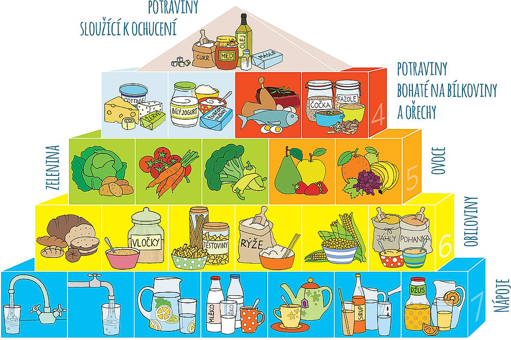

Hubnutí
Při hubnutí je důležité být v mírném kalorickém deficitu. To znamená jíst o něco méně energie, než tělo za den spotřebuje.
Kalorie, bílkoviny, sacharidy a tuky jednoduše
výživa
Cvičení je důležité, ale bez správného jídla se výsledky dostavují pomaleji. Jídelníček nemusí být složitý. Stačí vědět, co obsahují běžné potraviny a jak si sestavit normální denní režim.

Kalorie ukazují, kolik energie jídlo obsahuje. Pokud člověk přijímá dlouhodobě více energie, než vydá, může přibírat. Pokud přijímá méně energie, než vydá, může hubnout.
Hodnoty jsou orientační na 100 g potraviny. U hotových jídel se mohou lišit podle značky, množství oleje a způsobu přípravy.
| Potravina | Kalorie | Bílkoviny | Sacharidy | Tuky |
|---|---|---|---|---|
| Ovesné vločky | 389 kcal | 16,9 g | 66,3 g | 6,9 g |
| Kuřecí prsa pečená | 165 kcal | 31 g | 0 g | 3,6 g |
| Řecký jogurt 0 % | 59 kcal | 10,2 g | 3,6 g | 0,4 g |
| Vařená hnědá rýže | 146 kcal | 2,6 g | 30,8 g | 0,9 g |
| Vejce | 143 kcal | 12,6 g | 0,7 g | 9,5 g |
| Banán | 89 kcal | 1,1 g | 22,8 g | 0,3 g |
Při hubnutí je důležité být v mírném kalorickém deficitu. To znamená jíst o něco méně energie, než tělo za den spotřebuje.
Pro nabírání svalů je potřeba pravidelný silový trénink, dostatek bílkovin a lehký kalorický nadbytek.
Při udržování váhy je cílem přijímat přibližně tolik energie, kolik člověk za den vydá.
Tento jídelníček je pouze příklad. Není to lékařské doporučení, ale ukázka, jak může vypadat běžný den člověka, který cvičí.
| Jídlo | Příklad | Přibližné kalorie |
|---|---|---|
| Snídaně | ovesné vločky, řecký jogurt, banán | cca 500 kcal |
| Svačina | jogurt nebo tvaroh, ovoce | cca 250 kcal |
| Oběd | kuřecí maso, rýže, zelenina | cca 650 kcal |
| Svačina | celozrnné pečivo, vejce nebo šunka | cca 300 kcal |
| Večeře | salát, vejce, tuňák nebo kuřecí maso | cca 450 kcal |
| Celkem | orientační denní příjem | cca 2150 kcal |
Výživové hodnoty jsou čerpané z veřejných databází potravin a jsou zaokrouhlené pro školní účely. V praxi se mohou lišit podle konkrétní značky a přípravy.